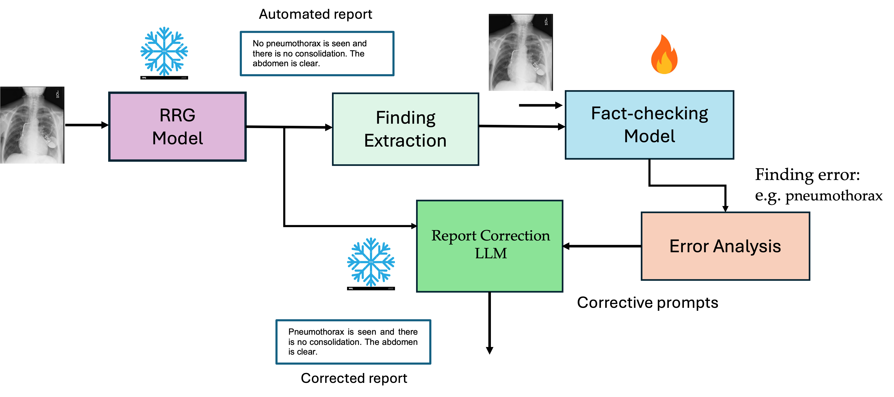
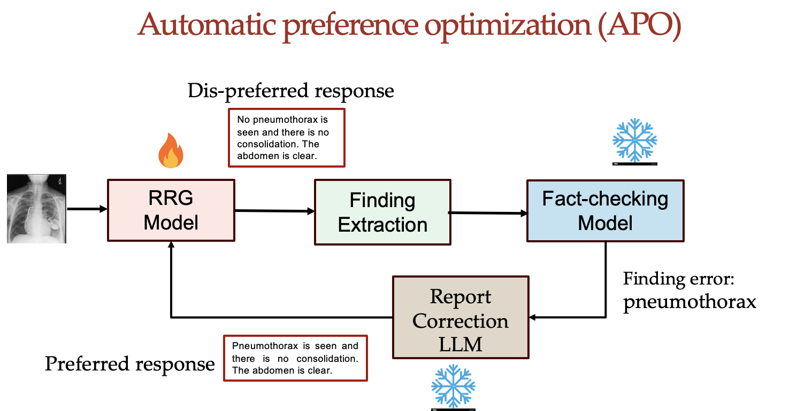
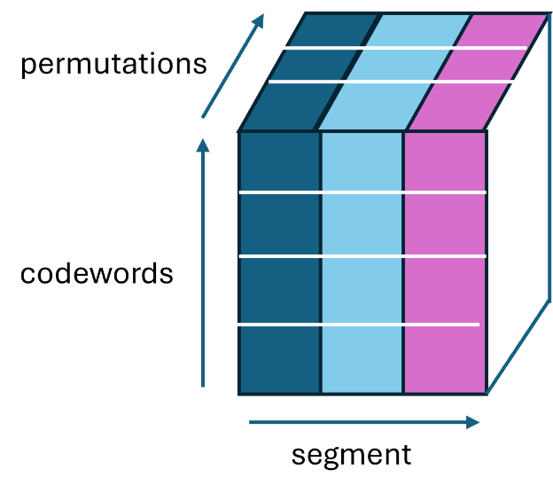
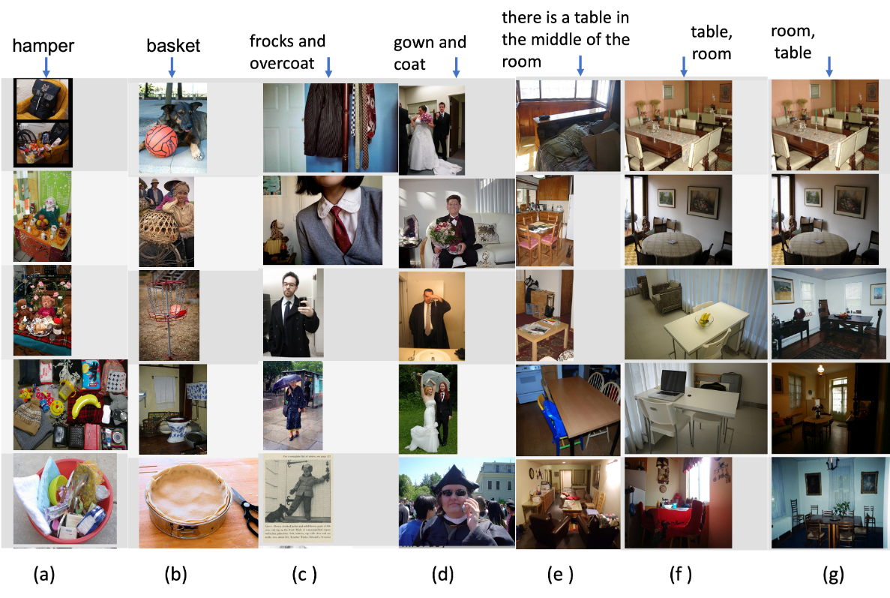
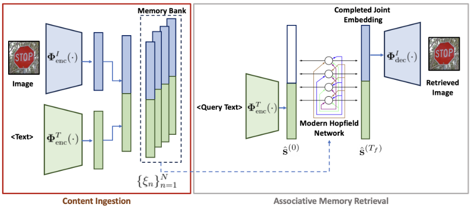
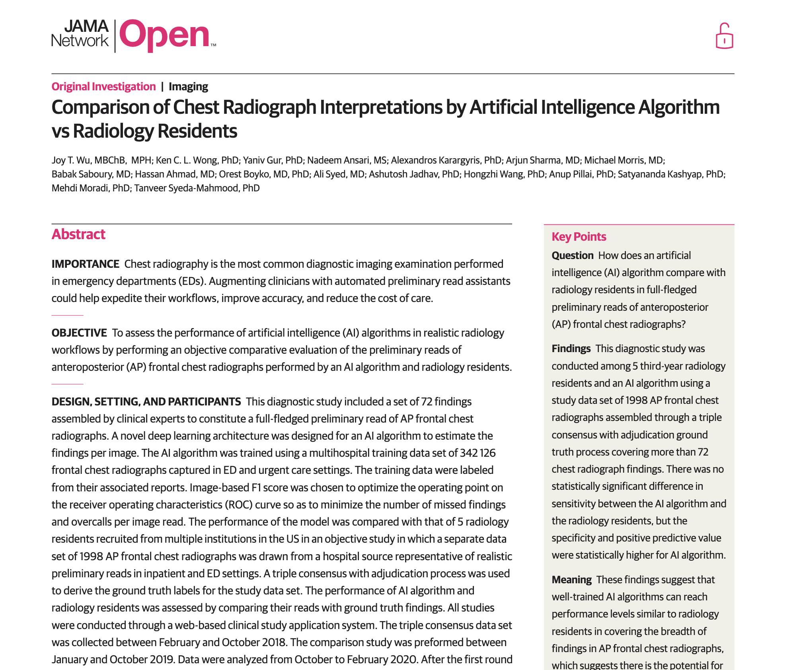
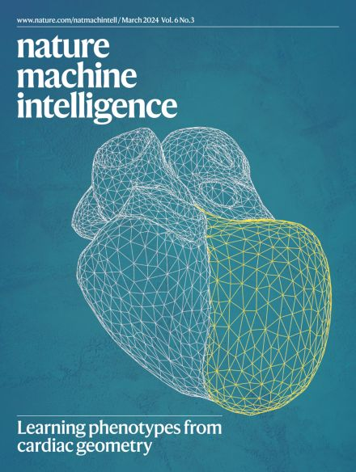
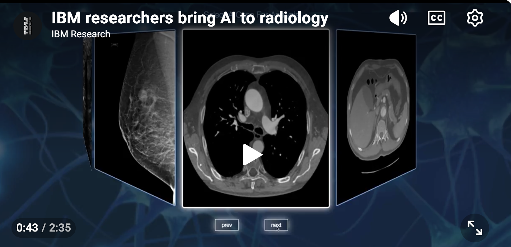

Tanveer Syeda-Mahmood
IBM Fellow • AI Executive & Chief Scientist • Technology Strategist • Stanford Adjunct Professor
I am an AI executive and Chief Scientist with a career spanning invention, research leadership, and large-scale commercialization of artificial intelligence systems in healthcare and enterprise domains.
My work spans computer vision, medical imaging, healthcare AI, multimodal foundation models, neuro-inspired architectures, and trustworthy AI systems deployed in real-world settings. It has helped shape medical imaging AI, multimodal foundation models, and clinical decision systems—translating research innovations into deployed technologies, enterprise platforms, and new business lines with global impact.
I operate at the intersection of scientific discovery, enterprise AI strategy, and organizational leadership, building systems that move from early-stage research into production environments at scale.
I also teach and mentor students in Stanford’s Biomedical Data Science Program and collaborate with leading researchers, clinicians, startups, and institutions worldwide.
I’m open to conversations around AI strategy, scientific direction, and building AI systems that work with precision in high-stakes environments.
Impact
Scientific Impact
35+ years in AI research with 300+ publications, 180+ patents, and 20K+ citations across computer vision, medical imaging, and healthcare AI.
Systems & Enterprise AI Impact
Led development and translation of AI systems into enterprise platforms and healthcare products, contributing to multi-billion-dollar impact across IBM’s AI and healthcare portfolio.
Strategic Impact & Enterprise Leadership
Shaped AI strategy, technical direction, and investment priorities across enterprise research and business units, influencing platform evolution and long-term technology roadmaps.
ExploreOrganizational Leadership
Built and led global AI organizations of up to 100+ researchers, engineers, clinicians, and product teams spanning research, development, and deployment.
Ecosystem & Community Leadership
Active leadership across academia, industry, and healthcare ecosystems through advisory roles on boards, conference leadership (CVPR, MICCAI), and co-founding initiatives such as the Digital Twin Society.
Honors & Fellowships
IBM Fellow, IEEE Fellow, AIMBE Fellow, MICCAI Fellow. IEEE EMBS Technical Achievement Award.
Focus Areas
General AI & Intelligent Systems
Healthcare & Clinical AI
Leadership & Strategy
Technology Strategy
I have helped shape long-term AI and technology strategy across research organizations, enterprise platforms, and healthcare businesses by identifying emerging opportunities, guiding investment priorities, and translating scientific advances into scalable products, business initiatives, and new market opportunities.
- Member of IBM's cross-divisional Technology Team, contributing technology assessments and strategic recommendations for senior executive leadership
- Led long-range studies on AI, data, and computing technologies to guide research prioritization, investment decisions, and future product direction
- Helped define technology roadmaps that influenced enterprise AI platforms, intelligent information systems, and new business initiatives
- Contributed to technology due diligence and acquisition strategy, including the acquisition of Merge Healthcare that enabled commercialization of IBM medical imaging AI technologies and helped establish the Watson Health Imaging business
- Spearheaded Grand Challenge programs that aligned multidisciplinary research teams around strategic opportunities with significant business and societal impact
- Led invention and innovation initiatives that strengthened intellectual property strategy and accelerated technology commercialization
- Evaluated emerging AI technologies and architectures to guide adoption decisions, platform evolution, and strategic investment priorities.
Organizational Leadership
I have led and scaled global AI research organizations operating at the intersection of research, engineering, and clinical deployment, with teams spanning up to 100+ members across distributed functions.
- Scaling multidisciplinary teams across research, product, and clinical domains
- Translating exploratory research into structured execution pipelines and deliverables
- Defining organizational structure aligned with AI platform and product strategy
- Building execution culture across research-to-deployment workflows
- Aligning technical teams with enterprise priorities and clinical validation requirements
Industry & Academic Collaboration
I work across academia, healthcare institutions, and industry organizations to build collaborative AI systems that translate research into real-world deployment.
- Cross-institutional collaboration across universities, hospitals, and industry labs
- Joint research-to-deployment programs in medical imaging and healthcare AI
- Partnerships with startups and enterprise AI teams on applied AI systems
- Clinical validation and deployment collaborations with healthcare organizations
- Research ecosystem development in multimodal and foundation AI systems
Leadership & Professional Service
Leadership roles across global AI, healthcare, and computer vision communities spanning conference organization, scientific governance, editorial leadership, and cross-sector advisory work.
Conference Leadership
- General Chair — MICCAI 2023
- Program Chair — IEEE CVPR 2008
- Program Chair IEEE ISBI 2022
- 14 MICCAI Workshop Chair Roles
- 10 CVPR/ICCV Workshop Chair Roles
Boards & Scientific Governance
- MICCAI Board Member
- AIMBE Fellow Committee Service
- IEEE Fellow Evaluation Panels
- Editorial & scientific advisory boards
Healthcare AI Leadership
- American Board of AI in Medicine
- American Board of AI in Healthcare
- Clinical advisory committees (hospital systems & industry)
- Translational AI governance in clinical settings
Editorial Leadership
- Medical Image Analysis
- IEEE Transactions on Medical Imaging
- IEEE TPAMI (Guest Editor)
- Computers in Biology and Medicine
Global Thought Leadership
- 18+ Keynote lectures
- 6 Plenary talks
- 25+ Invited talks worldwide
- MICCAI, RSNA, NeurIPS workshops, ACM KDD, SPIE Medical Imaging
Digital Twin for Health Society
Co-founder of a global initiative advancing digital twin technologies in healthcare, connecting academia, industry, and clinical systems for precision medicine and AI-driven healthcare transformation.
Products, Deployments & Industry Impact
My work has translated into deployed AI systems, enterprise platforms, and new healthcare and AI product lines across industry and clinical settings.
Watson Health Imaging
Led a large-scale IBM initiative called the Medical Sieve Radiology Grand Challenge that translated foundational research in medical imaging AI into the Watson Health Imaging business.
- IBM Patient Synopsis — A patient electronic health record (EMR) summarization product.
- IBM Clinical Review — A discrepancy detection and auditing product for revenue cycle management and peer review.
- Recognized with the AuntMinnie Best New Radiology AI Award for clinical translation impact
AI Platforms
- IBM watsonx.ai Intelligence — Enterprise AI search and knowledge enrichment platform.
- IBM Content-Aware Storage — Multimodal retrieval and RAG over enterprise storage systems.
- IBM Granite Vision 3.3 — Vision-language foundation model with leading OCR performance.
- Xerox DocuTech Systems — Handwriting recognition and document understanding deployed in production scanners.
- Early Autonomous Robotics Prototype — Co-developed one of the earliest autonomous vacuum-cleaning robot prototypes at MIT in 1988, preceding the founding of iRobot and later consumer robotic vacuum systems.
Clinical Deployments & Healthcare Systems
- Kaiser Permanente — Large-scale deployment of multimodal cardiac clinical decision-support AI systems in real-world care settings.
- Cedars-Sinai — Clinical AI platform enabling multimodal search over 1M+ patient records for cohort discovery and clinical trials selection.
- Deccan Hospital — Clinical trial deployment of normal/abnromal screening software for chest X-rays.
Research Vision
The next frontier of AI is not only generating answers, but ensuring their correctness. As foundation models become more capable, high-stakes domains such as healthcare require systems that can independently verify, explain, and correct outputs before they influence human decisions.
My current research focuses on building Verification AI systems that move beyond generation toward trust, safety, and accountability in multimodal AI.
Research Journey
Featured Work: Verification AI
Verification AI for Clinical Safety
Recent work introduces verifier models for radiology AI that detect factual inconsistencies, localization errors, and hallucinations in generated clinical reports. This is in collaboration with Prof. Pingkun Yan's group at RPI. The Master's student who led the work under our guidance recently won the UC Berkeley Data Science ChangeMaker Award for building trustworthy AI.
This direction shifts AI systems from generation-centric to verification-centric design.

Phased-Grounded Verifier Models
Phrase-grounded discriminative models for detecting hallucinations and factual inconsistencies in radiology reports that are agnostic to report generation models (RRG).
Automatic correction of radiology reports using fact-checking model-guided LLMs. Clinical studies documenting measurement improvement in report quality.
RadCheck Dataset & RQ Score
Large-scale dataset of 27 million pairs of images with real and fake findings used to train fact-checking models. It is the largest region-annotated dataset of fine-grained findings in chest X-rays.
RQ score is a new light-weight quantitative scoring method to evaluate the quality of LLM-generated radiology reports that measures clinical finding accuracy along with the localization accuracy.

Automatic Alignment of VLMs
Phrase-Grounded APO improves radiology report quality by automatically verifying and correcting generated reports during inference, eliminating the need for ground-truth preference data. By combining factual verification with image-grounded alignment, the method improves report quality by 30–40% across multiple state-of-the-art radiology report generators.
Selected Research
General AI

Multimodal RAG
Advanced search techniques I developed for vector DB that exploit multimodal document structure in pdfs, and combine lexical and semantic search in an integrated way are now part of new IBM Content-aware storage product
Vector quantization with sorting transformation
We developed a new sorting-based transformation that improves vector quantization efficiency, achieving near-uncompressed search accuracy with significantly lower memory cost.

Multimodal Foundation Models
I shepherded IBM's Granite Vision 3.3 2B foundation model; Top OCRBench performer, 95K+ downloads
The formation and recall of memories in the brain utilizes the linkage between episodic and semantic memory subsystems. In this work, I exploited this paradigm to design a new vision-language model that projects visual and textual concepts into a semantic memory space to build stable conceptual associations between objects and ways of referring to them.
Cross-Modal Hopfield Networks
The bioinspired memories project I led on building a computational model of the hippocampal memory system launched a new IBM Content-aware storage product
The hippocampal trisynaptic circuit plays a key role in memory formation and recall. While CA3 auto-associative behavior has been modeled using Modern Hopfield Networks, scaling these models for large-scale storage remains challenging. This work introduces a dentate gyrus–inspired encoding stage before Hopfield storage, enabling accurate retrieval of large sets of facts through cross-modal associations.Healthcare AI

Precision AI
Precision AI develops highly accurate AI systems for diagnosis and intervention in high-stakes clinical settings. My work includes early generative AI for chest X-ray interpretation and novel intravascular imaging architectures for cardiovascular interventions.
Geo-UNet: Geometry-guided U-Net
In collaboration with Boston Scientific and MIT, we developed novel neural network architectures for intravascular imaging and stent guidance, technologies that were subsequently commercialized and deployed clinically through Boston Scientific's AVVIGO multimodality guidance platform.

Multi-modal Fusion
My research develops multimodal AI methods that integrate clinical, imaging, genomic, and laboratory data to improve disease modeling and outcome prediction. We introduced multiplexed graph neural networks for cross-modal fusion, achieving state-of-the-art results in treatment outcome prediction and earning recognition as a MICCAI 2022 Young Scientist finalist. More recently, through multimodal fusion research of cardiac MRI with genomci data, we enabled the discovery of 49 genomic loci associated with cardiac morphology that appeared on the cover of Nature Machine Intelligence.

Clinical Decision Support & Informatics
My work in healthcare AI has spanned clinical decision support, healthcare informatics, predictive analytics, and population health. Through systems such as AALIM and Medical Sieve, I pioneered multimodal AI approaches that integrated clinical, imaging, and laboratory data to support diagnosis, patient similarity search, clinical reasoning, outcome prediction, and healthcare operational analytics at scale.
IBM launched a new Watson Health Imaging business by acquiring Merge Healthcare to commercialize the research I led in AALIM and Medical Sieve eras.
Honors & Recognition
Career Fellowships
- IBM Fellow
- IEEE Fellow
- AIMBE Fellow
- MICCAI Fellow
- AAIA Fellow
Industry & Institutional Recognition
- IEEE EMBS Professional Career Achievement Award (2025)
- IBM Master Inventor (long-term designation)
- Multiple IBM Corporate & Innovation Awards
- Best of IBM Award
Scientific & Innovation Awards
- AMIA Homer Warner Award (2020)
- MICCAI Young Scientist Finalist (2022)
- AuntMinnie Best New Radiology Software Award (2017)
- Elsevier MICCAI Best Paper Award (2016)
- 30+ invention plateau awards
Talent Development & Mentorship
Developing talent and disseminating advanced knowledge in AI, medical imaging, and multimodal intelligent systems across academia, industry, and healthcare.
PhD Advising & Research Mentorship
I advise and mentor PhD students, Master’s students, and postdoctoral researchers working at the intersection of multimodal AI, medical imaging, and trustworthy AI systems.
- Co-advising PhD and Master’s thesis research in multimodal AI and clinical AI systems
- Supporting students through research fellowships, internships, and academic career development
- Providing guidance on research direction, publication strategy, and long-term career pathways
- Fostering independent research leadership in academia, industry, and healthcare AI roles
Courses & Advanced Training
I design and teach advanced courses and tutorials on multimodal AI, foundation models, and medical imaging for graduate students, researchers, and industry practitioners.
Executive Brief
A concise synthesis of AI leadership, scientific direction, and enterprise-scale system development across healthcare and intelligent systems.
Contact
I welcome conversations on executive leadership opportunities, chief scientist and chief AI officer roles, technology strategy, startup advisory engagements, healthcare AI innovation, research collaborations, and invited speaking opportunities.
Professional Inquiries
For executive opportunities, board and advisory roles, startup discussions, strategic AI initiatives, research partnerships, and speaking engagements:
Professional Profiles
Areas of Interest
- Healthcare AI & Clinical Foundation Models
- Multimodal AI & Intelligent Systems
- Verification AI & Trustworthy AI
- Data & AI Platforms
- Neuro-Inspired Architectures
- Technology Strategy & Innovation
- Research Leadership & Talent Development